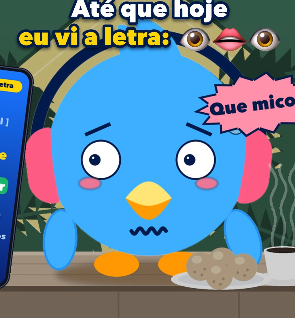

Branding · IP 设计
Lark Player 品牌IP形象升级
面向南美市场的音乐播放器品牌 IP 形象升级，通过更具亲和力的小鸟形象建立品牌人格，增强用户认同感与品牌粘性。
Branding · IP 设计
面向南美市场的音乐播放器品牌 IP 形象升级，通过更具亲和力的小鸟形象建立品牌人格，增强用户认同感与品牌粘性。

lark player
品牌IP形象升级

brand overview
IP case introduction
项目背景 /
ip设计
出海品牌
Lark Player 是一款主要面向南美市场的音乐播放器产品。为进一步提升品牌辨识度，建立与用户之间的情感连接，品牌希望通过 IP 形象塑造更具亲和力和记忆点的品牌人格，增强用户认同感与品牌粘性
形象亲和力不足
场景表达受限
视觉体系不完善


<2026>
process
针对原有 IP 在亲和力、情感表达及场景延展性上的不足，本次设计在保留既有品牌识别资产的基础上，对 IP 形象进行重新塑造
#01
为避免形象升级造成原有品牌认知的断层，保留已经建立的核心视觉特征：
#02

围绕「活力」与「音乐」两个核心关键词，重新探索 IP 的形象语言